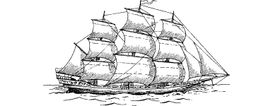

1
You set sail from Vadera harbour on a bitterly cold, grey, late winter’s day. The masts of your host ship, the Lencian clipper Saxin, have been rigged with every available square inch of canvas to catch the prevailing winds that will, with luck, propel you quickly to Talestria—the first stage of your long journey home. The clipper is a sleek and impressive craft and its departure does not go unnoticed, yet of all the many Lencians who have turned out to watch and wave it farewell, only King Sarnac and his closest advisors know the true purpose of its voyage.
Once the Saxin is beyond the sheltering walls of Vadera harbour, its captain charts an easterly course along the Tentarias—the chain of seas and landlocked lakes which separate the two continents of Magnamund. You and your companion, Lord Ardan, settle into the ship’s easy routine and, with few on-board duties to perform, you endeavour to pass the long hours constructively. With the aid of a map which he gives to you, Ardan briefs you on the route you should travel if you are to reach Sommerlund as swiftly as possible. You spend your time discussing the details of the route and pondering the new Evil which now threatens your homeland and the Kai.
{kind=link}

Every night, as you lie awake on your bunk staring at the tarred beams of your cabin, you wish away the miles that separate you from your beloved homeland. You want, most of all, to be with your young Kai acolytes in this dark hour, but fate has seen fit to place a great distance between you. Fearful of what you may find if you arrive home too late, every night you offer up prayers to the Gods Ishir and Kai to help speed your return to Sommerlund.